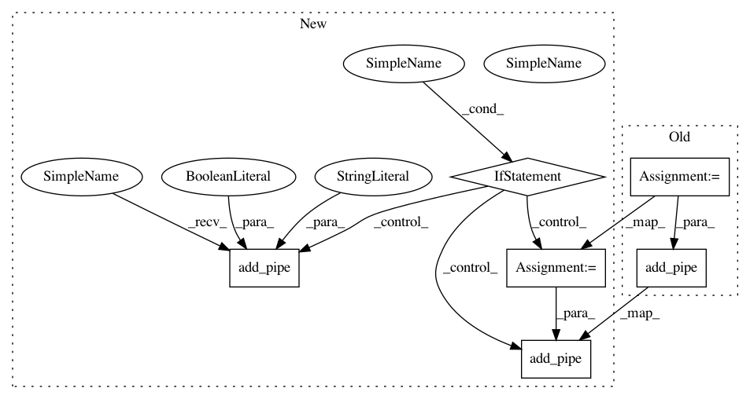

1b75347d3ccfe3b054c33807aaaa4299a3c02386,tests/spacy/test_spacy_model_export.py,,spacy_model_with_data,#,28
Before Change
def spacy_model_with_data():
// Creating blank model and setting up the spaCy pipeline
nlp = spacy.blank("en")
textcat = nlp.create_pipe(
"textcat", config={"exclusive_classes": True, "architecture": "simple_cnn"}
)
nlp.add_pipe(textcat, last=True)
// Training the model to recognize between computer graphics and baseball in 20newsgroups dataset
categories = ["comp.graphics", "rec.sport.baseball"]
for cat in categories:
After Change
def spacy_model_with_data():
// Creating blank model and setting up the spaCy pipeline
nlp = spacy.blank("en")
if IS_SPACY_VERSION_NEWER_THAN_OR_EQUAL_TO_3_0_0:
from spacy.pipeline.tok2vec import DEFAULT_TOK2VEC_MODEL
model = {
"@architectures": "spacy.TextCatCNN.v1",
"exclusive_classes": True,
"tok2vec": DEFAULT_TOK2VEC_MODEL,
}
textcat = nlp.add_pipe("textcat", config={"model": model}, last=True)
else:
textcat = nlp.create_pipe(
"textcat", config={"exclusive_classes": True, "architecture": "simple_cnn"}
)
nlp.add_pipe(textcat, last=True)
// Training the model to recognize between computer graphics and baseball in 20newsgroups dataset
categories = ["comp.graphics", "rec.sport.baseball"]
for cat in categories:
textcat.add_label(cat)
In pattern: SUPERPATTERN
Frequency: 3
Non-data size: 6
Instances
Project Name: mlflow/mlflow
Commit Name: 1b75347d3ccfe3b054c33807aaaa4299a3c02386
Time: 2021-02-02
Author: hkawamura0130@gmail.com
File Name: tests/spacy/test_spacy_model_export.py
Class Name:
Method Name: spacy_model_with_data
Project Name: mlflow/mlflow
Commit Name: 1b75347d3ccfe3b054c33807aaaa4299a3c02386
Time: 2021-02-02
Author: hkawamura0130@gmail.com
File Name: tests/spacy/test_spacy_model_export.py
Class Name:
Method Name: test_model_log_without_pyfunc_flavor
Project Name: mlflow/mlflow
Commit Name: 1b75347d3ccfe3b054c33807aaaa4299a3c02386
Time: 2021-02-02
Author: hkawamura0130@gmail.com
File Name: examples/spacy/train.py
Class Name:
Method Name: